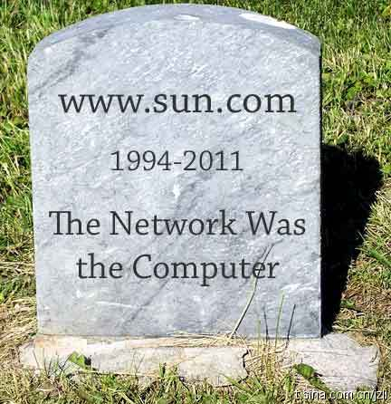

满意度是个很好的衡量指标，对员工来说，是每年都要参加的问卷调查．对用户来说，要看取样调查质量如何． //@胡德民PeterHu:微软每年有个考核指标Dev NSAT，就是总部直接来当地市场调研大家的满意度，若是降了，相关的微软员工就得被修理 //@anytao:
@技术分子JZ:
[甲骨文或100万出售Sun.com域名]有感：Sun是IT史上少见的“生为技术创新,从不考虑是否赚钱”的悲剧英雄：第一个提出“网络就是计算机”,却没在互联网上赚到几毛钱;第一个创立平台中立的现代语言Java,钱却让IBM,Oracle等赚取;拥有最全的产品线:处理器,操作系统,编程语言,应用软件,却几乎都open source.
- 